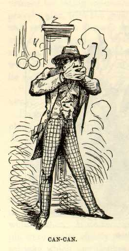

Paris NightlifeThe dance had begun, and we adjourned to the temple. Within it was a drinking saloon, and all around it was a broad circular platform for the dancers. I backed up against the wall of the temple and waited. Twenty sets formed, the music struck up, and then--I placed my hands before my face for very shame. But I looked through my fingers. They were dancing the renowned "Cancan." A handsome girl in the set before me tripped forward lightly to meet the opposite gentleman, tripped back again, grasped her dresses vigorously on both sides with her hands, raised them pretty high, danced an extraordinary jig that had more activity and exposure about it than any jig I ever saw before, and then, drawing her clothes still higher, she advanced gaily to the center and launched a vicious kick full at her vis-à-vis that must infallibly have removed his nose if he had been seven feet high. It was a mercy he was only six. That is the cancan. The idea of it is to dance as wildly, as noisily, as furiously as you can; expose yourself as much as possible if you are a woman; and kick as high as you can, no matter which sex you belong to. There is no word of exaggeration in this. Any of the staid, respectable, aged people who were there that night can testify to the truth of that statement. There were a good many such people present. I suppose French morality is not of that straight-laced description which is shocked at trifles. I moved aside and took a general view of the cancan. Shouts, laughter, furious music, a bewildering chaos of darting and intermingling forms, stormy jerking and snatching of gay dresses, bobbing beads, flying arms, lightning flashes of white-stockinged calves and dainty slippers in the air, and then a grand final rush, riot, a terrific hubbub, and a wild stampede! Heavens! Nothing like it has been seen on earth since trembling Tam O'Shanter saw the devil and the witches at their orgies that stormy night in "Alloway's auld haunted kirk." |